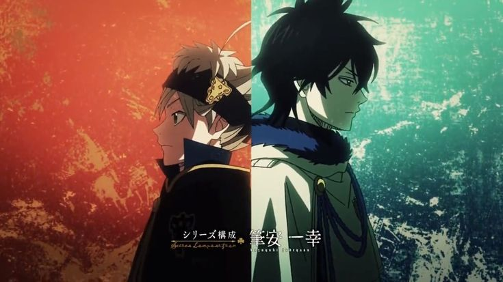

Black Clover is a japanese fantasy shonen manga and anime created by Yūki Tabata. It takes place in a world where magic is an important part of everyday life. The story follows Asta, a boy who is born without magic but dreams of becoming the Wizard King, the most powerful magic user in the Clover Kingdom. Even though Asta has no magic he still refuses to give up and works hard to prove that he can achieve his goal. After gaining a rare ability called anti-magic and a grimoire with a devil inside. He joins the Magic Knights and faces powerful enemies with his friends.

Important Characters
Important characters in Black Clover are Asta, Yuno, Noelle Silva, Yami Sukehiro , and Asta's devil Liebe that is introduced later in the storyline. Asta is the main character who was born without magic but gains anti-magic powers. Yuno is Asta's childhood friend and rival who is naturally gifted with magic and has wind magic. Noelle Silva is a member of the Black Bulls who uses water magic and learns to control her powers. Yami Sukehiro is the captain of the Black Bulls who uses dark magic and helps his team push past their limits.
Difference Between Asta And Yuno
| Asta | Yuno |
|---|---|
| Has no magic but has anti-magic | Has wind magic |
| 5 leaf grimoire with the devil inside | 4 leaf grimoire that has wind magic |
| Wants to become the Wizard King | Wants to become the Wizard King |